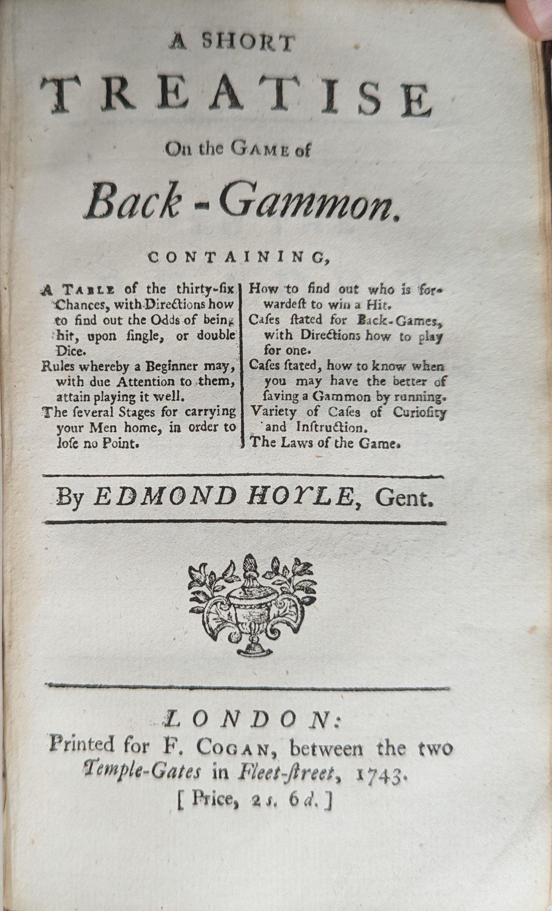

A Descriptive Bibliography of Edmond Hoyle
Copyright © 2014-26 by David Levy
(page updated 2026-01-30)User Guide
Backgammon.1
A Short Treatise on the Game of Backgammon, printed for F. Cogan, first London edition, 1743.
 |
Title: | A SHORT | TREATISE | On the Game of | Back-Gammon. | CONTAINING, | [11 lines to left of rule] A Table of the thirty-ſix | Chances, with Directions how | to find out the Odds of being | hit, upon ſingle, or double | Dice. | Rules whereby a Beginner may, | with due Attention to them, | attain playing it well. | The ſeveral Stages for carrying | your Men home, in order to | loſe no Point. | [11 lines to right of rule] How to find out who is for-|wardeſt to win a Hit. | Caſes ſtated for Back-Games, | with Directions how to play | for one. | Caſes ſtated, how to know when | you may have the better of | ſaving a Gammon by running. | Variety of Caſes of Curioſity | and Inſtruction. | The Laws of the Game. | [rule] | By EDMOND HOYLE, Gent. | [rule] | [tailpiece] | [rule] | LONDON: | Printed for F. Cogan, between the two | Temple-Gates in Fleet-ſtreet, 1743. | {Price, 2s. 6d.} |
| Collation: | 12o: [A]2(A1+1) B–C12 D12(−D12) [$½ (−D5,6) signed]; 38 leaves, pp. [6 ] 1–69 [70] |
| Contents: | Signature (Page) Reference | Contents | Signature (Page) Reference | Running Titles |
| A1r | blank | |||
| A1v | ‘[rule] | TO THE | READER. | [...] | [autograph of Edmond Hoyle] | [rule]’ | |||
| A1+1r | title | |||
| A1+1v | blank | |||
| A2r | ‘Juſt Publiſhed, [advertisemt for Whist.4]’ | |||
| A2v | To the Reader | |||
| B1r–D7v (1–62) | ‘[double rule] | A Short | TREATISE | On the Game of | Back-Gammon. | [...]’ | |||
| D8r–D8v (63–64) | ‘The LAWS of Back-Gammon. | [...]’ | |||
| D9r–D11r (65–69) | ‘[double rule] | An Alphabetical | TABLE | OF THE | CONTENTS. | [...]’ | |||
| D11v (70) | blank |
| Catchwords: | C9r(41) Anſwer, [Anſwer.] |
| Press Figures: | B2v(o):1; B11v(i):1; D2v(o):1 |
| Publisher: | Francis Cogan |
| Printer: | John Hughs (ornaments) |
| Notices: | 1743-06-29 Daily Post: "To-morrow will be publish’d, Price 2s. 6d." Advertised with Whist.4 and Laws.1. 1743-06-29 London Daily Post and General Advertiser: "This day is publish’d, Price 2s. 6d. In a neat pocket size, done up in fine gold embos'd paper and gilt on the leaves." Advertisements for Whist.4 and Laws.1. |
| Price: | 2s.6d. (advertisement) |
| References: | ESTC T87537, Jessel 777, Marshall s7 no.8 p201 (1889-09-14), Rather 9 |
| Copies Seen: | ABu [In SB 7951 Hoy]; L [7913.aa.60] (ECCO) (Google); O [Jessel f.578]; O [Jessel f.579]; NvLN [GV1469.B2 H8 1743]; TNJ [GV1469.B2 H8] |
| Copies Seen in Collections: | O [12 Theta 1318(5)] (see Cogan.D); O [Jessel f.543(5)] (see Cogan.D); O [Jessel f.580(2)] (see Cogan.D); TxU [GV1277.H89 1743c GTE] rebound and decorated with fore-edge painting (see Cogan.A); Levy [1537] (see Cogan.B) |
| Other Copies: | SAN [GV1241.H6]; CtY-BR [NLr89 B2 743h]; KU-S [B3393]; PBL [795.1.H867s.T]; Vi [GV1469.B2 H8 1743] |
| Other Copies in Collections: | IU [795.1 H85S]; InU-Li [GV1277.H89 1743] (see Cogan.C) |
| Notes: | 1743-06-28: Entered at Stationers' Hall in the names of Edmond Hoyle and Francis Cogan.I believe the preliminaries in an ideal copy are A2 with the title page inserted after A1. That construction puts Hoyle's autograph as a frontispiece facing the title page, as is typical of the Cogan Hoyles.However, there are almost as many variations of the preliminaries as there are copies. The conjugacy of A1 and A2 is clear in some cpoies (CtY-BR and TxU), while the leaves have been separated in others (L, O [12 Theta 1318(3)]). Some copies have the title inserted before A1 (O [Jessel f.543(5)], O [Jessel f.579], O [Jessel f.580(2)], CtY-BR), others after (L, TxU). Some lack the title page althogether.Finally there is a variant in the text beginning on A2r. Some copies have "Where may be had, just published" rather than "Just published," although the setting of type is otherwise the same. |